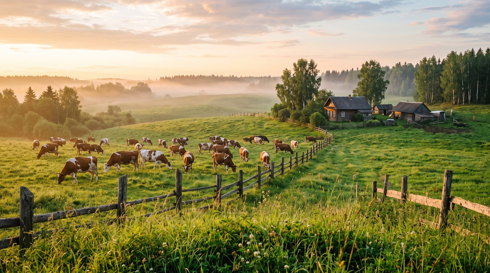
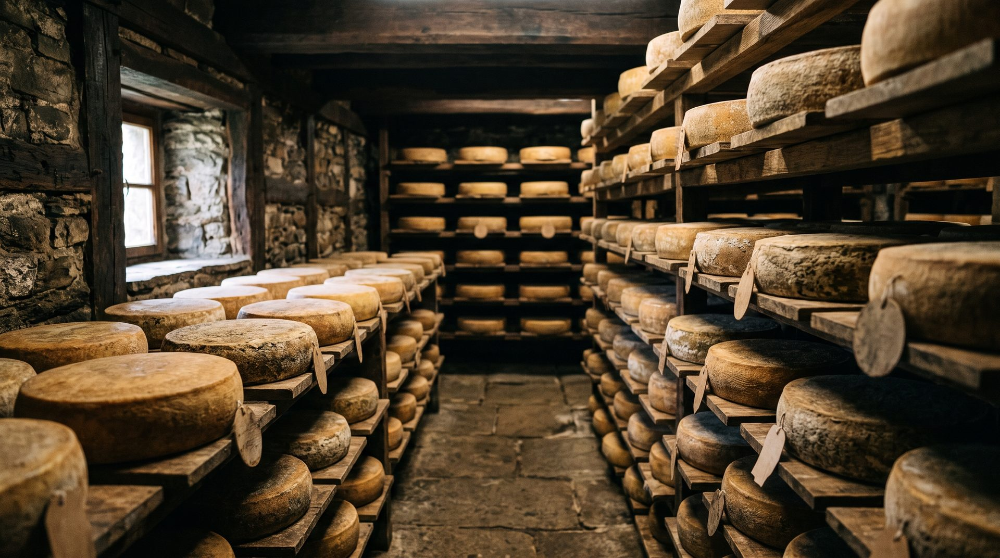
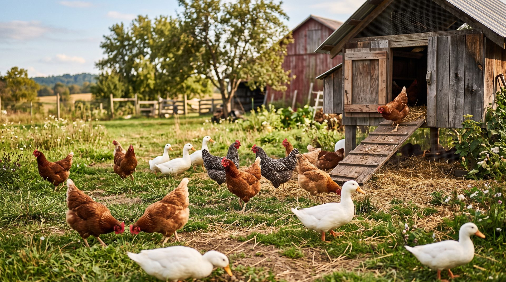
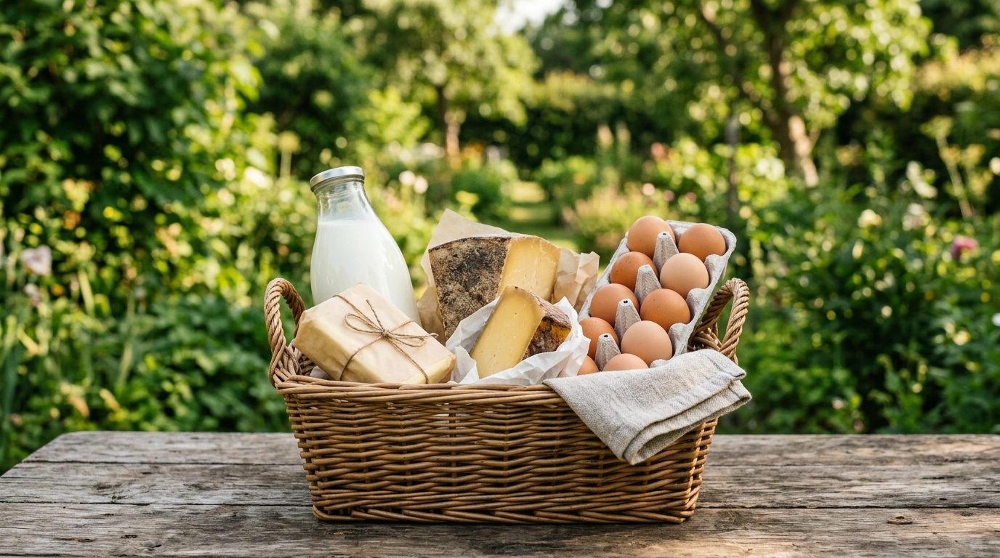
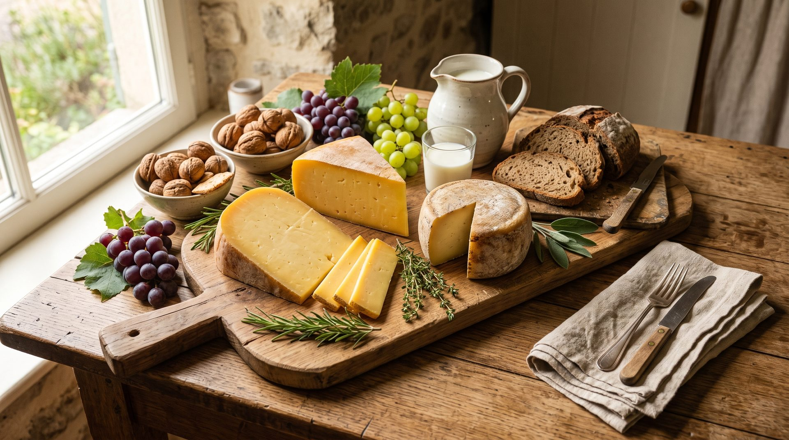
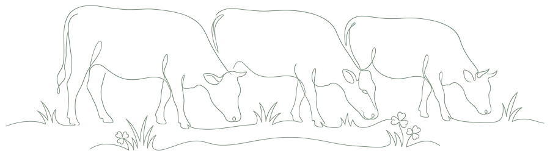

Ферма, где всё делают руками
д. Покровка, Клинский район. Своё стадо, своя сыроварня, своя птица — и никого между коровой и вашим столом.

С одной коровы
Начиналось всё с простого желания: чтобы дома на столе было настоящее. Одна корова, потом вторая, потом появилось стадо и своё пастбище. Когда молока стало больше, чем семья успевает выпить, пришла очередь сыроварни.
Сейчас работаем семьёй: доим, варим, выдерживаем, собираем заказы и сами же их развозим. Наёмных рук у нас нет, и от этого никуда не деться — зато и спрашивать за качество не с кого, кроме себя.
Двести метров от вымени до сыроварни
Молоко у нас не ездит по дорогам. Подоили — охладили — через час поставили на сыр. В такой короткой цепочке просто негде появиться лишнему: ни консервантам, ни сухому молоку, ни «восстановлению».
- Своё стадо, свои пастбища, свои корма
- Сыроварня прямо на ферме
- Выдержка в погребе — 2–3 месяца, без ускорителей
- Птица на свободном выгуле, а не в клетках
- Ничего не морозим и не храним месяцами

Сколько бы мы ни хотели — больше не сделаем
Сыра выходит ровно столько, сколько успевает созреть. Мы не берём молоко на стороне, чтобы закрыть спрос, и не выпускаем головку раньше срока. Если сорт кончился — значит, придётся подождать следующую партию, и мы честно скажем, когда она будет.




На ферму можно в гости
Покажем коровник, погреб и дадим попробовать то, что сейчас созрело. Только позвоните заранее — чтобы мы были во дворе, а не в поле.